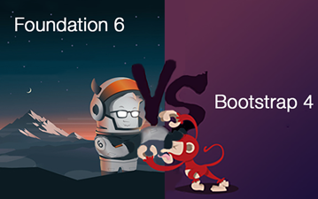
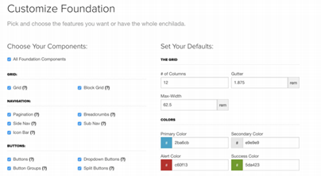
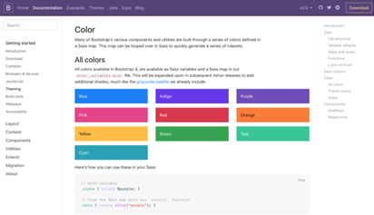

Foundation vs. Bootstrap: Which Front End Framework To Use?
Front end frameworks are used to help with some of the time consuming coding needed when building a well-designed website from scratch. Foundation and Bootstrap are two of the major contenders in this battle for the best front end framework. Drawing a decision to pick one of the two competitors depends on your level of coding and what type of style you want to incorporate into your web design. By providing a thorough Foundation versus Bootstrap comparison, I intend to resolve which framework is best for you.
What is a front end framework?
In order to build a website from scratch, many frameworks are available for designers and developers. Frameworks are used to consolidate the design process of a project. The result is a significant improvement in the speed of the projects development process compared to not using a framework. A front end framework, also called a CSS framework, is best suited for prototyping and building websites rapidly. It is a package that can be downloaded for free, consisting of CSS, JavaScript, and HTML scripts. These scripts are used to help web developers in structuring their pages and it also saves them considerable time when coding. A CSS framework is extremely convenient because it prevents the developer from having to redo the same code from scratch, every time you start a new web project.
Next let’s look at each of these frameworks in a little more detail.

Foundation
Foundation is a CSS framework designed by ZURB in September 2011. It has a slightly more advanced interface compared to other frameworks. Foundation is compatible on multiple browsers and hand held devices. The responsive menu is one of its greatest assets. The menu is incredible when it comes to functionality and can also be easily styled using CSS. This responsive framework allows designers and developers to create elegant websites with more of a design-it-yourself approach.
-
Pros:
- Design-it-yourself approach
- Immense customization settings
- Strong grid system
- Provides rapid development of code
- Easy to use templates available for download
- Lightweight
-
Cons:
- More complex when trying to customize
- Not a great framework for beginners
- Less popular than Bootstrap
Websites built in Foundation include: Adobe, Amazon, Washington Post, Herschel Supply, Pixar Projection, EBay.
Bootstrap
Bootstrap is the most commonly used CSS framework composed of HTML, JavaScript and CSS scripts. It was designed by former Twitter employees Mark Toto and Jacob Thornton. It was originally designed to be the interface used by Twitter to keep all the components and elements of their website consistent. Bootstrap has an immense amount of features that make coding a website easy and quick.
-
Pros:
- Massive community support
- Widest variety of themes
- Best browser capability
- Has both a fluid and fixed pattern grid system
- More development tools available
- Many popular websites are built on this framework
-
Cons:
- Not as lightweight when compared to other frameworks
- Difficult to use jQuery plugins
- Websites are easily recongizable
Websites built in Bootstrap include: Newsweek, Vogue, Indeed, NBA, Walmart, Code Academy

Foundation 6 vs Bootstrap 4
Both these front end CSS frameworks are continuously updating. These updated features enhance the coding process and make creating a web project more efficient.
Foundation Features:
- - Includes XY grids
Foundations default grid system that allows the developer to control the layouts based on both horizontal and vertical positions.
- - Smooth scrolling feature
This features has built in JavaScript code to add the “smooth scroll” feature to any link build inside the page.
- - Easier prototyping
Provides built in functionality to speed up the prototyping process.
Customization menu of Foundation
Bootstrap features:
- - Grid system built in Flexbox
Bootstrap uses a rewritten grid system built in flexbox with major changes to the grid classes and customization sections.
- - Forms
Simplified form creation and improvements to sizing, alignment and layouts.
- - Upgraded Navbar
Earlier versions of Bootstrap allowed for limited customization to the navigation bar. Whereas the latest version allows for more styles of the navigation components to be fully customizable.
Customization menu of Bootstrap
The Final Verdict
In order to make a conclusion which framework is better, you have to decide which one suits your requirements. In order to decide you must go through the features that each has to offer. With the given features currently listed, you must overlook that Foundation is quickly evolving and new updates are released frequently. Simply put, Foundation offers a slightly more complex, but a do it yourself style approach that will create something more unique and custom. Whereas Bootstrap allows for easy creation of simple yet elegant websites, with very little knowledge of CSS and JavaScript. Any CSS framework you chose will drastically simplify the web development process and provide the necessary foundations to build an amazing website.